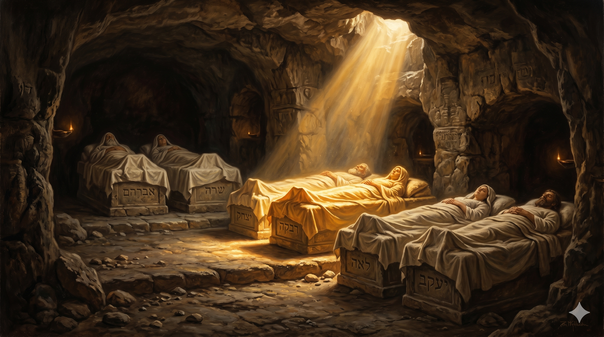

새벽안개가 깔린 가나안의 산길, 검은 천을 두른 거대한 행렬이 헤브론을 향해 천천히 올라간다. 맨 앞에는 야곱의 시신을 실은 수레가 있고, 그 뒤로 열두 아들과 그들의 아내·자녀, 이집트의 장로들과 바로의 신복들이 끝없이 늘어서 있다. 행렬 옆으로는 향유의 향이 산바람에 실리고, 멀리 막벨라의 동굴 입구가 천천히 모습을 드러낸다 — 한 가문이 마침내 약속의 땅으로 다시 발을 딛는 거룩한 귀향.
내가 내 조상들에게로 돌아가리니 나를 헷 사람 에브론의 밭에 있는 굴에 우리 선조와 함께 장사하라 … 야곱이 아들에게 명하기를 마치고 그 발을 침상에 모으고 숨을 거두니 그의 백성에게로 돌아갔더라 … 그의 아들들이 그가 명령한 대로 그를 위하여 행하여 그를 가나안 땅으로 메어다가 마므레 앞 막벨라 밭 굴에 장사하였으니 — 창세기 49:29–33; 50:12–13
야곱의 마지막 명령은 단호했습니다 — "나를 이집트에 묻지 말라. 나를 가나안 땅 막벨라의 굴에 우리 선조와 함께 장사하라." 그는 이집트에서 가장 안전했습니다. 총리가 된 아들 요셉의 보호 아래, 고센 땅의 가장 좋은 목초지를 가졌고, 바로의 보호 아래 십칠 년을 평안히 살았습니다. 그러나 그는 자신의 시신이 이집트 땅에 묻히는 것을 원하지 않았습니다. 왜였을까요? 야곱은 알고 있었기 때문입니다 — 이집트는 결코 자기 가문의 본향이 아니라는 것을. 그가 받은 약속은 가나안 땅에 매여 있고, 그 약속을 받은 자기 몸은 그 약속의 땅에 묻혀야 한다는 것을. 그래서 그의 마지막 한 마디는 "나를 데려가 다오"였고, 그 한 마디 안에 한 가문 전체의 신앙 좌표가 담겨 있었습니다. "우리는 여기서 잠시 머물 뿐, 우리의 본향은 그곳이다."
그리고 한 사람의 마지막 부탁이 한 거대한 행렬을 만들어 냈습니다. 창세기 50장은 이렇게 묘사합니다 — "바로의 모든 신하와 그의 궁의 장로들과 애굽 땅의 모든 장로와 요셉의 온 집과 그의 형제들과 그의 아버지의 집이 …병거와 기병이 그와 함께 올라가니 그 떼가 심히 컸더라"(50:7–9). 이방 제국의 가장 큰 행렬이 한 히브리 노인의 시신을 가나안으로 호위해 가는 풍경 — 이것은 단순한 장례가 아니라, 사백 년 후 같은 길을 거꾸로 걸을 한 민족의 출애굽을 미리 보여 주는 그림자입니다. 야곱은 자신의 죽음으로 자손의 운명을 미리 새겨 두었습니다. 너희도 결국 이 길을 따라 돌아오게 될 것이다 — 이집트의 보호가 끝나는 그날, 너희의 본향은 여전히 헤브론에 있을 것이다. 한 사람의 마지막 길이, 사백 년 뒤 한 민족의 첫 길이 되는 거룩한 예표였습니다.

막벨라 동굴 안, 이미 자리한 다섯 무덤 — 아브라함, 사라, 이삭, 리브가, 레아 — 옆에 야곱의 자리가 마지막으로 놓인다. 여섯 자리가 가지런히 누워 한 약속의 가문을 이루고, 동굴 천장의 좁은 틈으로 한 줄기 빛이 내려와 그 자리들을 부드럽게 비춘다.
야곱의 마지막 부탁은 우리에게 한 가지 깊은 질문을 남깁니다 — "당신의 본향은 어디입니까?" 우리는 살아 있는 동안 어디에 발을 디디고 있는지를 자주 묻지만, 내 마지막 자리가 어디인지를 묻는 일은 좀처럼 없습니다. 그러나 야곱은 알았습니다. 자기가 어디에 묻힐지를 정해 두는 일이, 곧 자기가 무엇을 믿고 살았는지를 정하는 일임을. 가장 안전한 이집트가 아니라, 가장 약속이 깊은 헤브론. 이것이 한 사람의 평생을 한 줄로 요약하는 신앙고백입니다. 오늘 당신이 가장 편한 자리, 가장 안정된 자리, 가장 풍요로운 자리에 머물고 있다면 — 그 자리가 당신의 본향이 아닐 수도 있다는 것을 기억하십시오. 우리의 본향은 가장 편한 곳이 아니라, 가장 약속이 깊은 곳입니다.
또 하나 — 한 사람의 마지막 부탁이 한 가문의 방향을 결정했습니다. 야곱이 "나를 가나안에 묻으라"고 한 그 한 마디 때문에, 열두 아들이 함께 행렬을 만들었고, 사백 년 뒤 그들의 후손이 같은 길을 따라 돌아올 마음의 좌표를 갖게 되었습니다. 우리도 한 사람의 부모로, 한 사람의 어른으로, 한 사람의 신앙의 선배로 — 우리가 마지막에 남기는 한 마디가 다음 세대의 방향을 정합니다. 화려한 유산을 남기지 못해도 괜찮습니다. "나는 어디로 돌아간다"라는 분명한 한 줄 — 그 한 줄이 자녀의 손에, 후배의 마음에, 다음 세대의 발걸음에 남는다면, 당신의 일생은 한 가문의 출애굽을 미리 새긴 거룩한 예표가 됩니다.
당신의 본향은 가장 편한 자리가 아니라, 가장 약속이 깊은 자리입니다.
한 사람의 마지막 한 마디가, 한 가문의 사백 년을 이끕니다.
오늘, 당신이 어디로 돌아갈 사람인지를 한 번만 분명히 입으로 말해 보십시오 — 그 한 마디가 다음 세대의 좌표가 됩니다.